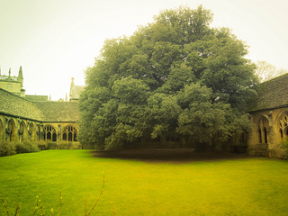

图片详情

晨曦之明
清晨,春姑娘穿着美丽的衣裳,舞着暖风,招展地笑着向我们走来,给大自然披上了新装,使万物显现出无限生机.一缕缕金 黄色的阳光撒向刚披上新装的草地,阳光照耀着小草上的露珠儿,露珠儿显得晶莹透亮,美丽极了!

绿夜之声
春天,它不像夏天那样干枯炎热,不像秋天那样冷清,也不像冬天那样寒冷.而春天是一个生气勃勃,充满活力的春天.这使我想到了我们的母亲,母亲就像大地,母亲生下我们,我们就有了生命,大地回春了,就等于一切都要重新开始了,所有的生命都重新来过.

黄昏之城
夜晚，太阳恋恋不舍地离开了天空。美丽的月亮给大地撒下一片银辉，温柔的月光如同水一般平静，散落在人们的脸上。美丽的天空好似一张蓝色的地毯上，镶嵌着无数亮晶晶的“小钻石”美丽无比。

梦幻之乡
黄昏，一缕轻烟，只见红彤彤的晚霞已经染红大半片天空了，形状更是千姿百态。天空布满了一块块形状不规则的青白色的小云块，像是碎裂开来似的，每一个云块周围都散着点点蓝色，显得格外好看而深远，又带着某种不可名状的神秘，这样的天空，在城市里并不多见。月亮显得特别的澄清，特别的明亮，在它的周围，散着一圈由橙黄到淡红的光晕，三点两点的星星散在空中，有几颗是很 亮的，呆在一个地方不动的，有几颗隐在云层里，乍一看，根本看不到，眨眨眼，又看到了，再一眨眼，又不见了。